{kind=link}
Циклический генератор CO₂ для аквариума
До разработки этого генератора я проводил эксперименты с разными конструкциями. Это описано на страничке Безнапорный генератор CO₂
В результате разработан генератор углекислого газа низкого давления, который может работать месяцами и автоматически включается вместе с освещением аквариума.
Описание принципа, тонкостей работы, и вариантов конструкции довольно длинное. Можете не читать все, а посмотреть только простейший генератор Сода + лимонка в 1 банке . Это тоже был экспериментальный вариант.
Рабочим вариантом стала конструкция генератора показанная на первой картинке "автоматический циклический генератор". Он работал пару месяцев. Потом я придумал и долго использовал еще более простую и надежную систему с насосом и таймером от aliexpress, но страничка об этом ещё не готова.
Циклический генератор CO₂

автоматический циклический генератор
Генератор вырабатывает углекислый газ при периодическом нагреве ёмкости с раствором соды. Когда нагрев отключен выработки CO₂ нет. Периодический нагрев нужно включать от того же таймера, от которого включается освещение вашего аквариума. Для периодического нагрева я использовал электромеханический таймер с шагом 15 минут. Можно использовать другие циклические таймеры. В качестве нагревателя подходит настольная лампа, но есть и другие решения. Сила нагрева, продолжительность нагрева и охлаждения должны быть такими, чтобы амплитуда колебаний давления в ёмкости с содой была больше, чем давление водяного столба H . При выполнении этого условия увеличение амплитуды нагрева увеличивает количество углекислого газа. Также подачу CO₂ можно регулировать, изменяя высоту подъёма кислоты H.
Производительность системы равна объёму газа, вытесняемого из ёмкости с содой. Часть этого объёма - это расширение газа при нагреве. Часть газа выделяется из-за увеличения скорости реакции при нагревании раствора. Часть газа может выйти и без нагрева если, сдавливая бутылки, перелить в ёмкость с содой много кислоты.
Циклическое нагревание используется для обеспечения подачи кислоты в соду. Это особый медленный насос . Вместо нагревания можно, например, изменять объём ёмкости, или наклонять ёмкость, или можно перекачивать жидкость насосом, включаемым на очень маленькое время. Циклический нагрев - это одно из простейших решений.
Более простое решение без таймера - нагреватель с гистерезисом. Например, такой, который включается при температуре 30 градусов, и выключается при температуре 50 градусов. Для изготовления такого нагревателя нужен резистор и термоконтакт (другие названия: термостат, биметаллическое реле) с определёнными свойствами. Опыты с термоконтактом впереди. Однако подобного бытового устройства для тех, кто не хотел бы что-то паять, я пока не нашёл.
Принцип работы
При включении нагрева газ в ёмкости с содой расширяется, поступает в ёмкость с раствором лимонной кислоты, и далее в аквариум. После выключения нагрева, при охлаждении газа в ёмкости с содой, он сжимается. При этом кислота поднимается по трубке, соединяющей две ёмкости. При снижении давления Pc на величину H кислота попадает в соду, начинается выработка углекислого газа, давление Pc повышается, и подача кислоты в соду прекращается. Давление Pк почти не меняется и примерно равно давлению в глубине аквариума. Однако при выключении нагрева запас давления для подачи через распылитель постепенно снижается, и выход CO₂ прекращается.
Максимальное давление в системе (в момент выхода газа из ёмкости с содой в ёмкость с кислотой) равно давлению в глубине аквариума плюс уровень раствора кислоты. Минимальное давление в ёмкости с содой реализуется в момент подъёма кислоты на высоту H. Обычно это давление меньше, чем в глубине аквариума, а при некоторых параметрах системы оно может быть ниже атмосферного.
Благодаря тому, что давление Pк всегда выше атмосферного, на выходе генератора необязательно использовать обратный клапан. Если хотите, можете использовать обратный клапан или счётчик пузырьков, совмещённый с обратным клапаном. Это не влияет на работу системы. Пузырьки CO₂ хорошо видны в ёмкости с лимонной кислотой.
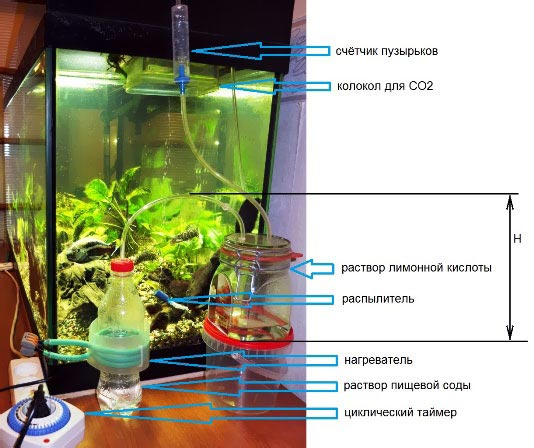
Компоненты циклического генератора
Для нагрева бутылки с содой в первых опытах я использовал настольную лампу, но она может упасть и разбиться, а также может расплавить пластиковую бутылку. Лучше использовать нагреватель с ограничением температуры и без стеклянных ламп. Возможно, подойдёт нагреватель детского питания. На фото показано, как я использовал греющий кабель, который имеет максимальную температуру 40-50 градусов. Место нагрева должно быть примерно на границе жидкости. При высоте H чуть ниже полулитровой бутылки Кока-колы нужно 3-4 витка греющего кабеля. При использовании регулятора мощности лучше сделать, допустим, 8 витков. Если использовать особенно низкую ёмкость для кислоты (или нижний вывод из ёмкостей ), то можно обойтись меньшим нагревом.
Внутренний нагреватель
Низковольтный нагреватель безопаснее, чем лампа или греющий кабель. На следующем фото показано, как я использовал резистор 25 ом при напряжении 12 вольт. Мощность этого нагревателя примерно 5 ватт. Этого достаточно для работы циклического генератора с высотой подъёма кислоты H выше, чем бутылка Кока-Колы.
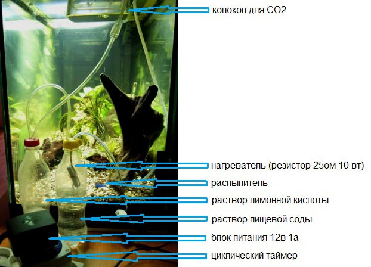
Циклический генератор с нагревателем внутри ёмкости
{kind=link}
Проводка тонкого кабеля выполняется внутри силиконовой трубки. Сначала трубка герметично проводится через крышку. Потом по трубке прокладывается кабель. Потом трубка заполняется герметиком хотя бы с одной стороны. Выбирайте кабель из одножильных проводов с герметичной изоляцией жил. Я использовал 2 проводка витой пары D0.6мм.
Тест на продолжительность работы я проводил с генератором из двух полулитровых бутылок с внутренним нагревателем из резистора SQP 27 ом, 10 вт при питании 12 вольт. Продолжительность освещения аквариума и работы генератора - 8 часов в сутки. Заправка состояла из 1 чайной ложки соды с верхом и 1 чайной ложки лимонной кислоты. Сода растворялась в 100 мл воды, кислота - в 300 мл воды. Большое количество раствора кислоты должно было помочь более тонко регулировать подачу кислоты путём изменения высоты трубки H . Однако я этим не воспользовался. Установка работала чуть больше 3х недель. После этого срока нагревающий резистор был наполовину затоплен раствором и подача CO₂ прекратилась, хотя не весь раствор кислоты был использован.
Керамический резистор SQP был подключен не герметично, и все 3 недели раствор кислоты капал на резистор сверху. Появились признаки окисления выводов и места пайки. При дальнейшем использовании такого нагревателя нужно рассчитывать общий объём растворов так, чтобы резистор всегда был выше уровня раствора. Конец трубки перелива H , в бутылке с содой должен располагаться ниже резистора и выше суммарного уровня растворов.
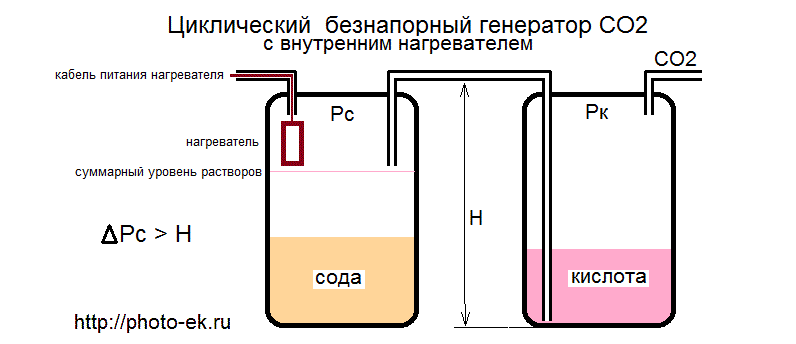
циклический генератор с внутренним нагревателем
{kind=link}
Кроме защиты внутреннего нагревателя от капающей кислоты желательно размещать его как можно ниже. Нагреваемый газ поднимается вверх, а газ, который оказался ниже нагревателя не участвует в работе. Обе проблемы решаются, если поместить нагреватель в отдельную сухую ёмкость. При этом нагрев надо немного увеличить, так как газ в ёмкости с содой не участвует в нагреве. Для увеличения нагрева вместо 27 ом использовался резистор 20 ом.
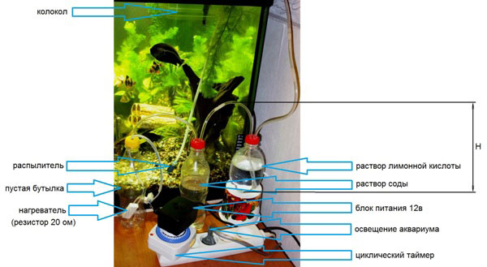
циклический генератор с отдельной ёмкостью для нагревателя
{kind=link}
Использование отдельной нагревательной ёмкости удобно ещё тем, что её можно нагревать снизу при наличии подходящего внешнего нагревателя.
Достоинства циклического генератора по сравнению с известными
Новый генератор
(1) имеет возможность электрической регулировки подачи CO₂
(2) автоматически включается вместе с освещением
(3) не требует использования защитного и электромагнитного
клапанов, кранов, редукторов
(4) благодаря низкому давлению, можно применять большие банки
с широкими крышками, хоть 10 литров; поэтому можно заправлять
генератор раз в насколько месяцев.
Дополнительные вопросы
Чем регулировать нагрев
Можно использовать диммер для ламп накаливания. Если для нагрева используется настольная лампа, то просто подвиньте её дальше или ближе. С греющим кабелем я использовал регулятор Мастер-кит NM1041 . Для низковольтного нагревателя можно использовать блок питания с регулировкой выходного напряжения. Умельцы могут приспособить для нагрева-охлаждения пару нагреватель-вентилятор или элемент Пельтье с соответствующей управляющей схемой.
Если без таймера, то какое нужно термореле
Вариант без таймера лучше подходит самодельщикам, которые умеют паять. Пока я не проверял такой вариант, но уже придумал схему нагревателя с гистерезисом.
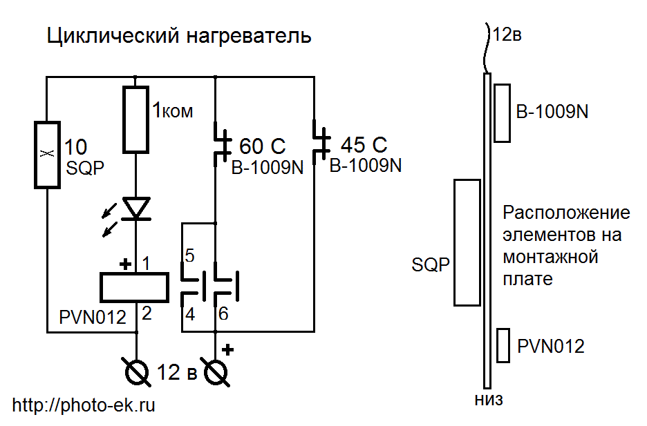
Нагреватель с гистерезисом
В схеме используются 2 нормально замкнутых термоконтакта, задающих диапазон температуры. Верхнее значение, соответствующее отключению нагревателя, это номинал термоконтакта, например 60°. Нижнее значение - это номинал второго термоконтакта с учётом его собственного гистерезиса. При номинале 45°, получим где-то 35° - 40°. В итоге для этой схемы интервал температур будет 35° - 60°. Диапазон изменения средней температуры газа будет меньше, так как термоконтакты расположены в какой-то одной точке, и не весь газ участвует в нагреве. Для изменения давления на 30 см водяного столба достаточно изменения средней температуры газа на 10°.
ΔP = P × ΔT / T, P = 1000 см вод ст, T = 300 K
Принцип работы схемы. При T>60° оба термоконтакта разомкнуты и нагрева нет. При T<35° термоконтакт, определяющий нижнюю границу нагрева, замкнут, и нагреватель работает. Внутри этого диапазона при нагревании контакты реле замкнуты вплоть до T=60° - нагреватель включён. При охлаждении контакты реле разомкнуты вплоть до T=35°, и в это время нагреватель выключен.
Светодиод показывает, когда нагреватель включен. Одновременно этот диод защищает полупроводниковое реле от случайной переполюсовки. Максимальная допустимая температура для реле PVN012 равна 85°. Такая температура не достигается, но всё же лучше разместить реле ниже греющего элемента - резистора SQP.
Для регулировки подачи CO₂ можно изменять напряжение питания. Я думаю, что схема будет работать от 6 до 24в. При максимальном напряжении 24в лучше заменить резистор 10 ом, на 40 ом, чтобы максимальная мощность нагрева не превысила 10 вт (номинал резистора SQP).
Традиционные генераторы не используют электричество. Зачем эти усложнения.
Вот условная электрическая схема генератора с самодельным нагревателем.
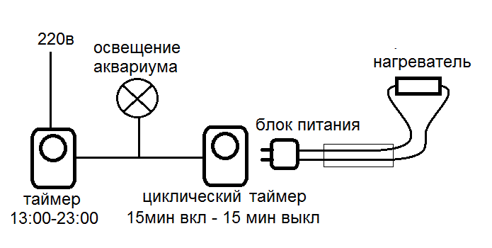
Электрическая схема циклического генератора
Если использовать для нагрева настольную лампу, то схема содержит только готовые бытовые устройства. Не так сложно.
Как провести трубку герметично
Для пластиковых крышек используем сверло по металлу D4.5-4.8 мм заводской заточки. При сверлении нужно прижать пластик к дереву - отверстие получится без заусенцев. Для стекла используем победитовое сверло "пёрышко" D4-5 мм. Сверлим стекло шуруповёртом на медленных оборотах, часто охлаждая в воде.
После сверления отверстие смазываем силиконовой смазкой. Хорошо подходит также смазка для водопроводной резьбы.
Силиконовую трубку с внешними диаметром D6 мм косо отрезаем ножницами. Острым концом вставляем в отверстие. Вытаскиваем за острый конец плоскогубцами на нужную длину. Если нужно, косой срез трубки отрезаем ножницами. При аккуратных отверстиях клеить не требуется.
Провести трубку через жестяную крышку. При использовании жестяных крышек я проводил трубку через стеклянную стенку банки.
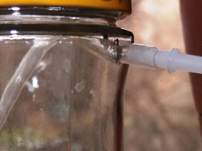
Трубка в боковой стенке стеклянной банки
{kind=link}
Герметично провести провод в бутылку. Сделайте трубку 5-10см с проводом и заполните её силиконовым герметиком. Толщина проводков должна быть такой, чтобы их все можно было провести через удлиняющий штуцер или тройник, а длина должна обеспечивать нужное погружение в ёмкость. Для проводки провода в ёмкость приготовьте крышку с короткими трубками, проведите провод через штуцер или тройник и далее через трубку в крышке.
Как проверить герметичность системы
Можно проверить качество каждого соединения, погрузив его воду, но это нельзя сделать после сборки всей системы. Есть способ сборки, который позволяет легко обнаружить утечку в работающей системе. Для этого бутылки надо перевернуть вниз крышкой, и сделать соответствующие исправления в схеме генератора.
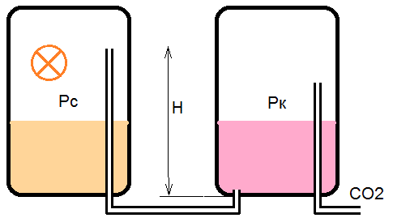
циклический генератор с нижним выводом
{kind=link}
{kind=link}
Высоту трубки H в ёмкости с содой нужно сделать чуть выше суммарного уровня жидкости. Благодаря уменьшению H такая система может работать при меньшем нагреве, чем система с верхним выводом трубок.
Как уменьшить H , не переворачивая банки
Если нет низкой стеклянной банки, то стеклянные банки можно не переворачивать. Делаем отверстие в стенке банки на высоте чуть выше уровня кислоты.
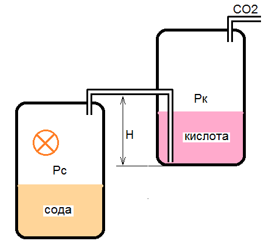
циклический генератор с боковым соединением
{kind=link}
Для уменьшения необходимого нагрева можно не только уменьшить высоту H, но и увеличить объём ёмкости с содой. Чем больше объём газа, тем больше вытесняется газа при нагреве на одинаковое число градусов. При использовании большой ёмкости для соды используйте стеклянную банку, а не пластиковую бутылку. Из-за низкого рабочего давления в фазе охлаждения пластиковая бутылка может сжиматься вместо того, чтобы всасывать кислоту по трубке H. При использовании пластиковых бутылок выбирайте более жёсткие.
Можно ли упростить циклический генератор
В конструкцию рассмотренного ранее упрощённого генератора , в котором кислота подаётся в соду через тонкую трубочку "капилляр" надо добавить циклический подогрев ёмкости с содой.
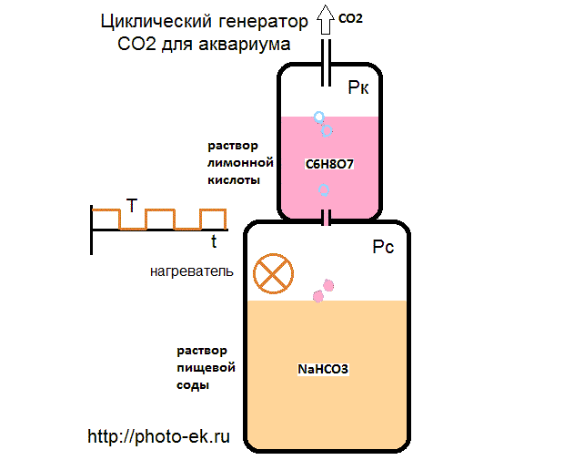
генератор с капиллярной подачей кислоты
{kind=link}
Тонкая трубочка играет роль капиллярного затвора . Она пропускает кислоту вниз или углекислый газ вверх только при наличии некоторого перепада давления. При диаметре трубочки D = 1-2 мм этот перепад ΔP = H составляет 10-30 мм водяного столба.
ΔP = 4 σ / D
для воды поверхностное натяжение σ = 7 мм водяного
столба × мм
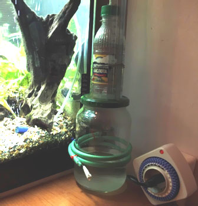
капиллярная подача, нагрев кабелем
{kind=link}
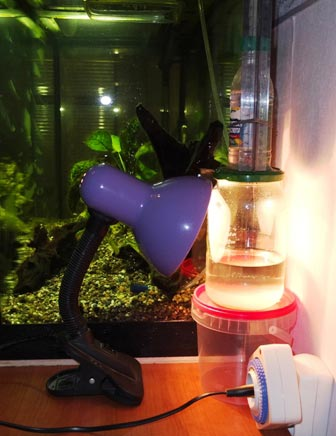
капиллярная подача, нагрев лампой
{kind=link}
При малом задерживающем перепаде давления H генератор работает менее стабильно. На подачу кислоты в соду и CO₂ в аквариум может влиять не только нагрев, но также изменение температуры в помещении, сквозняк, вибрации. В среднем количество выработанного углекислого газа из-за этого не изменится, но часть газа будет получена при выключенном освещении.
Наиболее удачная система с капиллярной подачей, которая у меня получилась, была с внешним нагревательным элементом от паяльной станции СТ-41С . Он плотно одевается на литровую стеклянную банку.
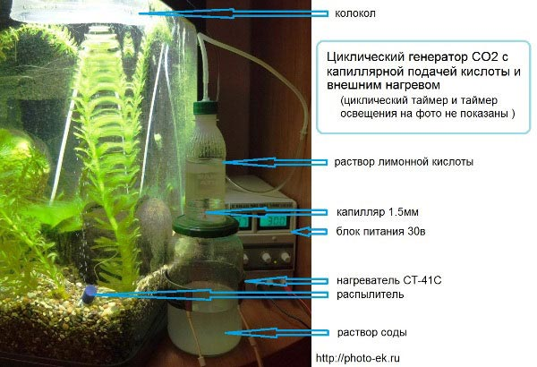
капиллярная подача, кольцевой нагреватель
{kind=link}
Для питания нагревателя СТ-41С я использовал напряжение 30 вольт. Можно подавать постоянный или переменный ток. Потребляемый ток был 0.17 А, мощность 5 Вт. Подачу CO₂ можно регулировать, изменяя напряжение питания.
Генератор с капиллярной подачей кислоты кажется совсем простым. Однако конструкцию можно ещё упростить благодаря возможности тонкой настройки производительности при помощи регулировки напряжения на нагревателе.
Простейший циклический генератор "в 1 банке"
В конструкции циклического генератора используются 2 эффекта, стабилизирующие темп выработки CO₂. (1) Отрицательная обратная связь - при попадании кислоты в ёмкость с содой начинается выработка CO₂ и это останавливает подачу кислоты. (2) Гидравлический затвор H или капиллярный затвор - ограничивает смешивание компонентов при малых колебаниях давления или температуры.
Если отказаться от "затвора", то стабильность выработки CO₂ будет хуже, требуется более тонкая регулировка напряжения на нагревателе. При этом конструкция генератора станет проще.
{kind=link}
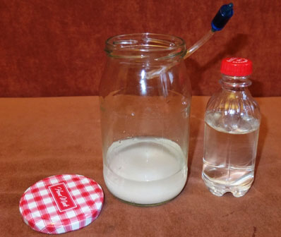
Раствор соды 200 мл и раствор лимонной кислоты 200 мл
{kind=link}
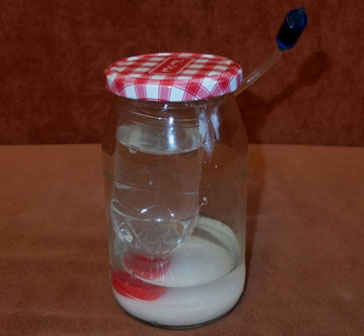
Сода+лимонка
в 1 банке по простоте напоминает
брагогенератор
{kind=link}
{kind=link}
Принцип работы. Нагреватель включается от циклического таймера. Из-за этого температура и давление в банке с содой периодически изменяются. В ёмкости с раствором кислоты давление изменяется меньше. В ней некоторое среднее давление. При увеличении давления в ёмкости с содой, немного раствора соды перетекает в ёмкость с кислотой, начинается выработка CO₂ внутри бутылочки с кислотой. В итоге разница давлений выравнивается. При уменьшении давления в ёмкости с содой, немного раствора кислоты попадает в соду, вырабатывается CO₂, и давление опять выравнивается. По мере работы генератора количество кислоты в бутылочке уменьшается. Обратный клапан нужен для того, чтобы давление в ёмкости с содой могло уменьшиться при охлаждении. Без обратного клапана вместо уменьшения давления получится всасывание воды из аквариума.
Из-за отсутствия затвора перетекание кислоты в соду и соды в кислоту происходит как при включении, так и при выключении нагревателя. Выработка CO₂ происходит на обоих тактах работы нагревателя. Процесс выработки CO₂ имеет некоторую инерцию - вырабатывается немного больше, чем нужно для выравнивания давлений. "Лишний" газ, поступает в аквариум. После выключения циклического нагрева затухающий циклический процесс перетекания растворов некоторое время продолжается. В конце концов выработка CO₂ прекращается.
В этой конструкции требуется меньшая мощность нагрева, чем в конструкциях с затвором. По мере выработки растворов может потребоваться увеличить мощность. Если не увеличивать, то производство CO₂ к концу работы системы уменьшается в 2-3 раза. В моих экспериментах начальная мощность была 2 Вт, конечная 4-5 Вт. Если используется источник питания с постоянным выходным напряжением, то для регулировки амплитуды нагрева можно передвинуть нагреватель выше или ниже.
Количество вырабатываемого углекислого газа и продолжительность работы от 1 заправки зависят от концентрации растворов и от амплитуды нагрева.
Не требуется полное растворение соды в воде. Из-за того, что бутылочка с кислотой перевёрнута, кислота подаётся на дно ёмкости с содой и необходимое количество соды растворяется позже. Для нормального начала работы генератора сода не должна быть сухой. Некоторое количество воды в ёмкости с содой нужно, чтобы не образовался капиллярный затвор.
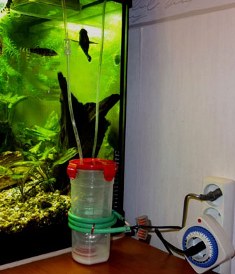
Вариант простейшего циклического генератора с пластиковой
ёмкостью для соды
{kind=link}
При использовании греющего кабеля с питанием от сети 220в (как на этом фото) можно изменять амплитуду нагрева, перемещая нагреватель выше (нагрев меньше) или ниже (нагрев больше).
Сколько нужно соды, воды, лимонной кислоты.
Какая концентрация CO₂ нужна растениям.
Эти вопросы лучше изучить самостоятельно. Для начальных оценок используйте следующие числа:
При большом количестве растений в аквариуме требуется примерно
1 пузырёк CO₂ в секунду на 1 тонну воды.
100 гр лимонной кислоты даёт 1000000 пузырьков CO₂ (размером 3 мм)
100 гр лимонной кислоты растворяются в 100 мл воды
100 гр соды растворяются в 1 л воды
Пропорция лимонной кислоты и соды в одной заправке примерно 1:1. Лучше делать избыток соды, так как она дешевле и хуже растворяется.
Какого размера должен быть колокол.
Устройство для растворения углекислого газа в воде традиционно называю реактором . Один из простейших реакторов - колокол - перевёрнутый пластиковый лоток. Перед запуском генератора CO₂ перевёрнутый лоток, заполненный воздухом, размещают вблизи поверхности воды над распылителем. В начале работы генератора, пока из распылителя идёт не углекислый газ, а воздух, газ будет выбулькивать снизу из колокола по мере его переполнения. Если площадь колокола достаточная, то через некоторое время будет видно, что газ не заполняет его полностью, так как весь поднимающийся из распылителя газ растворяется в воде. Если площадь мала, то не успевший раствориться углекислый газ будет выходить из колокола снизу, как и в начале работы. Я использовал лоток 10x10x4см.
Кстати, для правильной работы генератора и реактора распылитель не требуется. Не требуется также опускать трубку на дно аквариума. Достаточно, если конец трубки (с распылителем или без него) размещён ниже колокола. Если на трубке нет обратного клапана, то желательно, чтобы глубина погружения трубки была больше 10 см. При меньшей глубине резкое уменьшение температуры в помещении (например, при открывании окна) может привести к снижению давления в ёмкости с раствором лимонной кислоты, и вода из аквариума по трубке попадёт в кислоту.
Порядок разборки генератора
Не разъединяйте трубку между ёмкостями и не снимайте крышку бутылки с содой - вытечет раствор лимонной кислоты, так как давление в ёмкости с кислотой примерно равно давлению на глубине аквариума. Для отключения системы от аквариума и сброса давления снимите трубку со счётчика пузырьков, или откройте крышку банки с кислотой. После этого можно делать другие отсоединения.
Система может не иметь ни одного разъёма. Тогда для сброса давления нужно достать трубку с распылителем из аквариума или открыть крышку ёмкости с кислотой.
Евгений Корниенко 2015-09